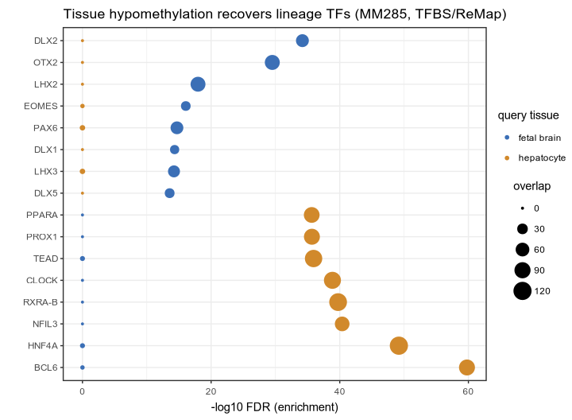
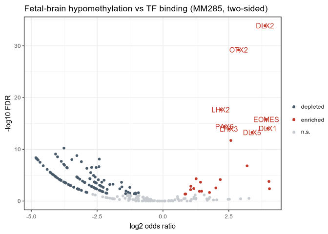
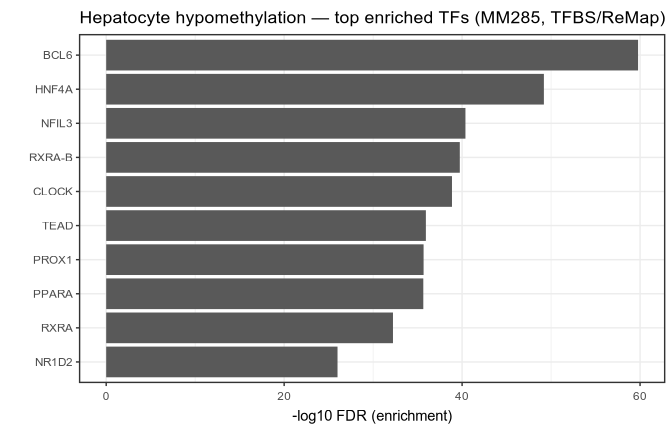
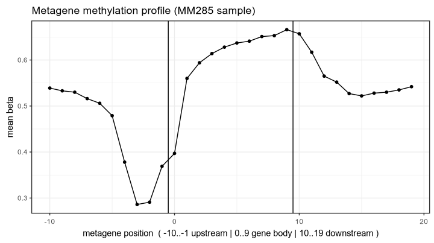

GitHub· cinderplot· SeSAMe· hg38 · mm10 · MSA · EPICv2 · EPIC · HM450 · HM27 · MM285 · Mammal40
# both binaries, from conda
conda install -c zhou-lab -c conda-forge kycg yame
# or build from source (YAME is a submodule)
git clone --recurse-submodules \
https://github.com/zhou-lab/kycg
cd kycg && make && make yame-binInstall yame too. kycg links
libyame statically, so the backend's library is inside the binary — but the
yame command is a separate package, and the row-space
check below needs it. From source, make builds only the
library; make yame-bin adds
external/YAME/yame.
Dependencies are YAME's — vendored htslib, zlib,
libm, and libcurl for fetch (optional;
make CURL=0 builds without it) — with YAME linked
statically from a pinned submodule.
kycg --version (or -v) reports the
coupled YAME version, the registry tag it can verify, and whether the build has
libcurl.
# guided: location, collection, sets, confirm
kycg fetch
# or name what you want outright
kycg fetch mm10
kycg fetch hg38:CGI,ChromHMM
# open with hg38 checked; f to start
kycg fetch hg38fetch and nowhere
else, and every question is gated on an interactive terminal. Inside a Nextflow
job or a Docker build there is nobody to answer, so an explicit target proceeds
without asking and a missing one is an error rather than a hang.Knowledgebases lived in three places with three access patterns and no verification.
fetch is the tie.
# -f skips the browser: plan, then fetch
$ kycg fetch -f mm10:CGI
==> Knowledgebase sets to download
mm10 • KYCGKB_mm10 • ~/.local/share/yame/mm10/KYCG
CGI.20220904.cm 120 KB
cpg_nocontig.cr 22.7 MB
2 file(s), 22.8 MB
✓ CGI.20220904.cm 120 KB
✓ cpg_nocontig.cr 22.7 MB
✓ 2 fetched (22.8 MB).…into a plain layout keyed on the target you fetch — the
address you browse to, not the repo it came from — shared with the rest of the
suite. A .cm
in the store is an ordinary file that kycg test -m takes by path.
No database, no lockfile, no bookkeeping.
~/.local/share/yame/
├ mm10/ # whole genome (KYCGKB_mm10)
│ ├ cpg_nocontig.cr # the row list
│ └ KYCG/
│ ├ ChromHMM.20220414.cm
│ └ SHA256SUMS
└ MSA/ # array (InfiniumAnnotation)
├ MSA.ordering.tsv.gz # probe ordering
└ KYCG/
├ CGI.20220904.cm(+.idx)
└ SHA256SUMS$YAME_DATA_HOME.The full hg38 collection is 363 MB. You rarely want all of it.
# a tree — → unfolds a target in place
$ kycg fetch
target kind rows source cached_sets
▸ hg38 whole genome 29,401,795 KYCGKB_hg38 3/32
❯ ▾ mm10 whole genome 21,867,837 KYCGKB_mm10 28/28
├ CGI CGI…cm 120 KB cached
├ ChromHMM ChromHMM…cm 857 KB cached
├ PMD PMD…cm 16.3 KB cached
row 1 of 10 • 0 selected • → open ← close space select i close f fetch d store q quit
# or name it directly — opens with those checked
$ kycg fetch hg38:CGI,ChromHMM
# no browser, no questions (scripts, Docker, Nextflow)
$ kycg fetch -f hg38:CGI,ChromHMMi opens a pane answering what a set actually is. It is on by default and follows the cursor, so arrowing down walks you through the catalogue with each set explained as you reach it — i hides it when you want the full screen for scanning:
TFBSrm Transcription factor binding sites, ReMap
A larger, uniformly reprocessed TF binding compendium — around 1,188
factors — built from published ChIP-seq rather than one lab's panel.
The rm suffix is ReMap, not repeat-masked.
source ReMap 2022, non-redundant MACS2 peaks
citation Hammal et al. 2022, Nucleic Acids Res, doi:10.1093/nar/gkab996
processing remap2022_nr_macs2 peaks, one set per factor.data/knowledgebases.tsv, so i works offline. A field
nobody has been able to establish reads not recorded rather
than being quietly omitted — an honest gap beats a plausible invention.
-o takes set names, not file names —
ChromHMM, not ChromHMM.20220303.cm.Hypergeometric tail, six effect sizes, stratified FDR. 21.8M rows in 0.12 s.
kycg test -m ~/.local/share/yame/mm10/KYCG/ChromHMM.20220414.cm \
query.cg > res.tsv-m is repeatable — this is what
makes a store worth having. One pass, one table, one FDR correction:
kycg test $(for f in ~/.local/share/yame/mm10/KYCG/*.cm; do
printf -- '-m %s ' $f; done) \
query.cg > res.tsvOmit -m on a terminal and kycg offers
the store — filtered to the sets that share your query's row space, so the list
cannot be picked wrong:
$ kycg test onecell.cg
Knowledgebases for 21,867,837 rows -- space to choose, t to test
target kind rows cached_sets
❯ ▾ mm10 whole genome 21,867,837 28
├ [ ] Blacklist Blacklist.20220304.cm cached
├ [x] CGI CGI.20220904.cm cached
├ [x] ChromHMM ChromHMM.20220414.cm cached
├ [ ] ChromHMMfullStack ChromHMMfullStack…cm cached
…
→ open ← close space select i close f fetch t test q quitIt is the same browser fetch uses,
showing only the collections whose row count matches the query. A set you do not
have yet is still listed: check it, f to fetch it, then
t to test against it without leaving.
NO_COLOR keeps the widget and drops only the colour — the
cursor row is marked with a glyph, not ink. A terminal that cannot address the
cursor (TERM=dumb) or a redirected stdout falls back to
plain TSV instead.
One row per (query sample, knowledgebase record), sorted by significance.
$ kycg test -m ChromHMM.cm -m CGI.cm -m PMD.cm \
onecell.cg | cut -f3,4,10,13
db_file db estimate fdr
PMD…cm commonHMD 0.275 0
ChromHMM…cm Quies 0.199 0
ChromHMM…cm QuiesG 0.253 0
ChromHMM…cm Tx 0.307 0
CGI…cm Shore 0.196 9.17e-266p_value and fdr are conveniences,
recovered as 10^log10_p; they underflow around
-308 while real enrichments run past
-1500. Sort and threshold on
log10_p and neglog10_fdr.Everything is positional: row i must mean the same CpG in the query and
in the knowledgebase. Confirm with yame info before you test —
yame is kycg's backend but a separate command, from its
own package (conda install -c zhou-lab -c conda-forge yame, or
make yame-bin in a source tree). kycg itself has no
info subcommand.
$ yame info onecell.cg ChromHMM.20220414.cm
File Sample Ncol Nrow Format UnitBytes Keys
onecell.cg 1 NA 21867837 3 1 NA
ChromHMM…cm 1 NA 21867837 2 1 N=19|Quies,…Mismatches fail loudly, naming both files and both counts:
Row count mismatch: query 'small.cg' record '1'
has 5 rows but knowledgebase 'chromhmm.cm'
record '1' has 21867837 rows.
These files index different reference row
lists and cannot be compared..cr, arrays a per-platform ordering. Matching
them is yours to get right; the picker above helps by offering only sets whose
row count already agrees.The lookup half of the same data test aggregates over:
test asks whether a group of probes is enriched somewhere,
annotate asks where one probe actually falls. It reads a
TSV of probe IDs and writes it back with one column added per knowledgebase.
$ kycg annotate -m EPIC:CGI,ProbeType hits.tsv
# every input column and row kept, in order, plus:
Probe_ID … CGI ProbeType
cg00000029 … opensea cg
cg00000109 … island cg
# -i gives a 0/1 indicator column per set instead of names
$ kycg annotate -i -m EPIC:CGI hits.tsvNA and counted, not
dropped.kycg emits TSV; cinderplot renders it as its own process. No linking, so Cairo never enters kycg's dependency surface.
# volcano — drop the zero-overlap sentinel first
awk -F'\t' 'NR==1||($10>-1000&&$10<1000)' res.tsv > v.tsv
cinderplot 'v.tsv
+ aes(estimate, neglog10_fdr)
+ geom_point() + theme_minimal()' -o v.pdfestimate is not always finite.
It is log2 of the odds ratio, and zero overlap makes that
log2(0), clamped to a sentinel near
-1022 (infinite odds ratio lands near
+1022). On a whole-genome query most sets have no overlap,
so most rows carry it — filter abs(estimate) < 1000 before
plotting, exactly as KYCG_plotVolcano does.neglog10_fdr is precomputed because cinderplot
has no -log10() transform in aesthetics, and it is the y-axis
of three separate plots. Any arithmetic a plot needs is done in C.Does kycg recover known biology? Two angles. A tissue's hypomethylated CpGs
mark the regulatory DNA it holds open — fed to kycg test
against transcription-factor binding sites (ReMap, 638 factors), the top hits are that
tissue's lineage regulators, no tuning. And a whole sample's methylation,
averaged over metagene coordinates, redraws the classic gene architecture. Click any
figure to enlarge; everything regenerates with the scripts below (plotted with
cinderplot, no R, from
kycg-examples).
# the plotting is cinderplot; install it alongside kycg and yame
conda install -c zhou-lab -c conda-forge cinderplot
git clone https://github.com/zhou-lab/kycg-examples
bash kycg-examples/scripts/tissue_tfbs_enrichment.sh # the three TF panels
bash kycg-examples/scripts/metagene_profile.sh # the metagene profileThe
kycg-examples repo also carries the sample
.cg / .cm the snippets above use
(onecell.cg and friends) — neither the package nor the main
repo ships query data.

# tissue Hypo probes vs TF sites
kycg test -m MM285:TFBSrm *_hypo.cg
cinderplot 'aes(factor(tf), neglog10_fdr,
colour=tissue, size=overlap)
+ geom_point() + coord_flip()'DLX, OTX2, PAX6,
LHX); hepatocyte → hepatic (HNF4A, PPARA,
RXRA). Each is absent in the other.
kycg test -a two.sided \
-m MM285:TFBSrm fetal_brain_hypo.cg
cinderplot 'aes(estimate, neglog10_fdr,
colour=sig) + geom_point() + geom_text()'
kycg test -m MM285:TFBSrm hepatocyte_hypo.cg
cinderplot 'aes(factor(tf), neglog10_fdr)
+ geom_col() + coord_flip()'HNF4A, PPARA, RXRA) and the circadian core
the liver runs on.
# sample beta over metagene bins
kycg test -m MM285:MetagenePC mm285_sample.cg
cinderplot 'aes(pos, beta)
+ geom_line() + geom_point()'kycg test's beta column vs
MetagenePC): the textbook promoter/TSS hypomethylation dip, gene-body
hypermethylation rising toward 3′, back to baseline downstream.fetal_liver Hypo returns GATA1, TAL1,
GATA2 — hematopoietic master regulators, because fetal liver is the site of
fetal hematopoiesis. The same command reproduces it.Ten collections behind one command. Sequencing sets index a whole-genome CpG reference
and ship with the cpg_nocontig.cr that defines it; array sets index
a platform's probe ordering. The two are byte-compatible and semantically incompatible —
that is exactly why kycg test checks row counts.
| Target | Sets | Size | Source |
|---|---|---|---|
hg38 | 32 | 363 MB | KYCGKB_hg38 |
mm10 | 28 | 266 MB | KYCGKB_mm10 |
ChromHMM · CGI · TFBS · PMD · rmsk · HM (histone marks) · ABCompartment · Blacklist · CTCFbind · ImprintingDMR · MetagenePC · Tetranuc · TissueSignature (BLUEPRINT / Brain / Loyfer) · nFlankCG · Centromere · Chromosome · and more.
| Target | Sets | Probes |
|---|---|---|
MSA | 32 | 284,309 |
HM450 | 18 | 486,427 |
EPIC | 17 | 866,553 |
MM285 | 17 | 287,692 |
EPICv2 | 16 | 937,690 |
HM27 / Mammal40 | 15 | 27,722 / 38,607 |
Every file carries its own digest, compiled in. A download is verified against what this build says the file is — never against a manifest the same server served, which is why the mirror you fetch from is untrusted infrastructure. The trade is deliberate: a set published upstream with no row in the registry cannot be verified, so it is not offered. The table is the authority for what exists.
The registry is projected
from YAME's shared table by tools/make_registry.sh, kycg's own
emitter. Each row carries the URL, the digest and the size, so planning a fetch needs
no network at all — and neither does browsing the catalogue.
{ "CGI.20220904.cm",
"https://raw.githubusercontent.com/…",
"99c3ede80a2d7833…", 122892 }Each row's key names its
source and the immutable tag it came from, so one collection can move while the rest
stay put — and there is no global tag left to override, which is why
-t is gone. Zenodo keeps the DOI and remains the citable
archive; it is no longer the fetch path.
zhou-lab/genomes@v4:hg38/cpg_nocontig.cr
zhou-lab/KYCGKB_hg38@v2:CGI.20220904.cmDownloads land on a
.part sibling and are renamed only after the digest matches, so
an interrupted fetch cannot leave a file that later reads as valid. The store is
re-checkable with no kycg code at all:
cd ~/.local/share/yame/MSA/KYCG
shasum -a 256 -c --ignore-missing SHA256SUMS--ignore-missing
matters because you rarely hold every set the directory could hold: the manifest
kycg writes describes the directory, not the subset you fetched. It is derived from
the registry rows for that directory alone, so it no longer lists the genome row list
stored a level up — the old "missing cpg_nocontig.cr" that
was indistinguishable from a partial fetch is gone.
The first columns are yame summary's, renamed. Everything from
estimate onward is what kycg adds — yame
gives counts and a rounded effect size; kycg tells you which results survive multiple
testing.
| Column | Meaning |
|---|---|
query_file, query | the .cg and the sample in it |
db_file, db | the .cm and the record in it |
group | FDR stratum: the knowledgebase, or (global) under -G |
nU nQ nD overlap | the 2×2 table: universe, query, database, overlap |
beta, depth | mean over the record — knowYourCG's dbStats, free |
| Column | Meaning |
|---|---|
estimate | log2 odds ratio, full precision |
log10_p | the p-value. One-sided hypergeometric tail |
neglog10_fdr | the FDR. BH within stratum |
p_value, fdr | convenience only — these underflow to 0 |
cf_jaccard cf_mcc cf_overlap cf_npmi cf_dice | five alternative coefficients |
testEnrichment() takes a single query and calls
p.adjust() on that query's frame. Adding more samples or more
knowledgebases to an invocation therefore never changes an FDR already reported.
-G widens the stratum to all knowledgebases for a sample.The whole point of collapsing two codebases into one is that the numbers stop drifting. Both layers are checked against R directly.
$ make test
ok test_hypergeo # worst relative error 2.6e-16
ok test_enrich
...
ok t_usage
15 passed, 0 failedAcross four regimes: small,
array-scale (486K), whole-genome (29M), and the deep tail at
log10 p ≈ -584141.
$ Rscript tests/validate_vs_R.R res.tsv
log10_p OK worst 4.09e-12
estimate OK worst 4.75e-10
log10 fdr OK worst 2.96e-12
PASS: agrees with R on every column.Residual is output text
precision, not computation. Counts are byte-identical to
yame summary.
Log space or bust. A linear-space BH assigns FDR 0 to every underflowed row — which is every row anyone cares about.
Loader's saddle-point
expansion for the point mass, as R's dhyper() does. A
difference of lgamma calls loses ~7 digits to cancellation over
a 29M-row universe. htslib's kt_fisher_exact() is unusable for a
separate reason: int counts, and it loops "until underflow" by
construction.